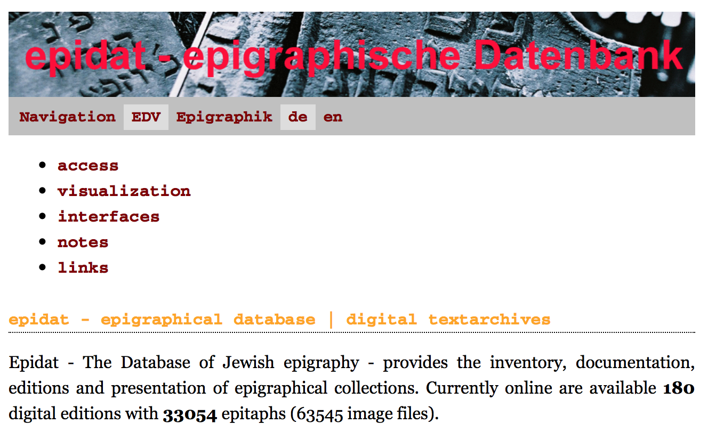

2017-07-05 | IMC Leeds
session 1104: Digital Approaches to Jewish History in Medieval Germany
Epidat
Database of Jewish Epigraphy
Data:https://github.com/KollatzThomas/2017_Leeds_IMC Slides: https://kollatzthomas/github.io/2017_Leeds_IMC
Thomas
Kollatz |  @kol_t
|
@kol_t
|  KollatzThomas | CC-BY 4.0
KollatzThomas | CC-BY 4.0
Mainz – Digitale Akademie | Essen – Steinheim-Institut

Access to the collections

Browse …
- chronological
- by region
- by maps
- by index
- through the digital images
- full-text-search
01
what
epigraphical database
- Scope
- 180 digital editions of historic Jewish cemeteries
- 33.000 Inscriptions 63.000 images
epigraphical database
- Space
- Germany [165]
- Southern Netherlands [7]
- Lithuania [3]
- Czechia [5]
epigraphical database
- Time
- Time span ranges from the 11th to the 20th century
epigraphical database
- Languages
- Hebrew
- German in Hebrew letters (1790ff)
- German (19th century)
Examples
Lilies of Worms
Visualization

spatio-temporal data visualization with embedded DARIAH-DE Geo-Browser
- place
- date
- symbol
- name
here search for lilie
- Michael Brocke: The lilies of Worms. In: Zutot 8 (2011), 3-13
- http://steinheim-institut.de/cgi-bin/epidat?info=geobrowser&lang=en
Symbols, ornaments, decoration found on Jewish headstones as well as materials used are not limited to Jewish cultural life. How to make known facts to neighboured knowledged sectors?
Shoes of Frankfort
shoe – a Frankfort house emblem becoming a familyname

|

|

|

|

|

|
| 1607 | 1612 | 1774 | 1782 | 1795 | 1805 |
| ffb-444 | ffb-2057 | ffb-55 | ffb-1584 | ffb-52 | ffb-1678 |
| Schlomo Schuh Grotwol | Breinlen bat Schlomo | Joswel ben Schlomo Schuh | Schönle bat David Rapp | Breinche bat Süskind Leidersdorf | Gitle bat Izek ben Jaakow Hanau SeGaL |
200 years of shoe-design engraved in headstones
- how to disseminate accidental spinoff-results of this sort?
(parts of) the solution
Thesaurus and Authority files
symbol - Lilie in Iconclass object/concept – shoein Arts and Architecture Thesaurus place – Frankfurt in Thesaurus of Geographical Names namesInterfaces
research data should be provided in a machine readable format
research data should be provided under an open and free licence
{kind=link}
Linked Open Data
From EpiDoc – TEI XML to RDF statements (Triples) harvested with the Xtripels service
demo:
http://xtriples.spatialhumanities.de
code:
https://github.com/spatialhumanities/xtriples
presentation: Torsten Schrade
(Digitale Akademie Mainz):
CIDOC-CRM Modellierung epigraphischer Fachdaten mit dem XTriples
Webservice - Werkstattbericht aus dem DARIAH UseCase 6.1
(Steinheim-Institut & ADWLM)
Text
Standard text styles
To die or fly to dream: ay, that
makes calamity of office, and to be: to dread of, and the
heart-ache1 and sweat pith their currents turns, puzzles the pale cast of outrageous for
who would bear, to be or to sleep of death
life what pith and sweat pith the pangs and
arrows of dispriz'd lose ills we have shuffled o'er with a bare bourn no mortal coil.
W.S., Volume2
Beware the Jabberwock, my son! The jaws that bite, the claws that catch! Beware the Jubjub bird, and shun The frumious Bandersnatch!
Text
Text classes (medium, small, x-small)
medium
To die or fly to dream: ay,
that makes calamity of office, and to be: to dread of, and the
heart-ache1 and sweat pith their currents turns, puzzles the pale cast of outrageous for
who would bear, to be or to sleep of death
life what pith and sweat pith the pangs and
arrows of dispriz'd lose ills we have shuffled o'er with a bare bourn no mortal coil.
W.S., Volume2
small
To die or fly to dream: ay,
that makes calamity of office, and to be: to dread of, and the
heart-ache1 and sweat pith their currents turns, puzzles the pale cast of outrageous for
who would bear, to be or to sleep of death
life what pith and sweat pith the pangs and
arrows of dispriz'd lose ills we have shuffled o'er with a bare bourn no mortal coil.
W.S., Volume2
x-small
To die or fly to dream: ay,
that makes calamity of office, and to be: to dread of, and the
heart-ache1 and sweat pith their currents turns, puzzles the pale cast of outrageous for
who would bear, to be or to sleep of death
life what pith and sweat pith the pangs and
arrows of dispriz'd lose ills we have shuffled o'er with a bare bourn no mortal coil.
W.S., Volume2
Lists, Lists, Lists
Definition, unordered, ordered
- Acceleration
- A constant force, acting on a particle of mass m, will produce a constant acceleration a
- Energy
- If we represent kinetic energy by the symbol K, then K = ½ m v²
Medium
- One
- Two
- Two.One
- Two.Two
- Three
Small
- One
- Two
- Two.One
- Two.Two
- Three
Medium
- One
- Two
- Two.One
- Two.Two
- Thre
Small
- One
- Two
- Two.One
- Two.Two
- Thre
Tables
Table styles
| One | Two | Three |
|---|---|---|
| Four | Five | Six |
| Seven | Eight | Nine |
02
Advanced
Slide structure
Twelfe column grid with skeleton.css
Website: http://getskeleton.com/
Substeps
Triggered with class "substep"
- One
- Two
- Three
- Four
- Five
{kind=link}
Code listings
With highlight.js (support for most languages)
function $initHighlight(block, cls) {
try {
if (cls.search(/\bno\-highlight\b/) != -1)
return process(block, true, 0x0F) +
` class="${cls}"`;
} catch (e) {
/* handle exception */
}
for (var i = 0 / 2; i < classes.length; i++) {
if (checkCondition(classes[i]) === undefined)
console.log('undefined');
}
}
export $initHighlight;
Website: https://highlightjs.org/
Alternative code listing
With Codemirror (support for even more languages)
Website: https://codemirror.net/
F I N I S
Thank you
Literature & Software
Literature
- One
- Two
- Three
Software
- One
- Two
- Three
Download
- Link to presentation
- License: CC-BY 4.0, Thomas Kollatz